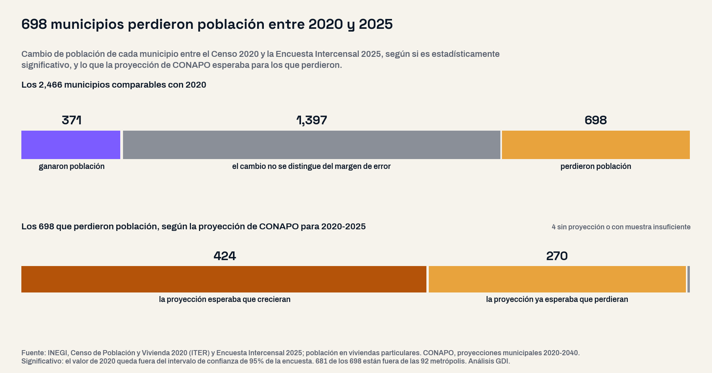
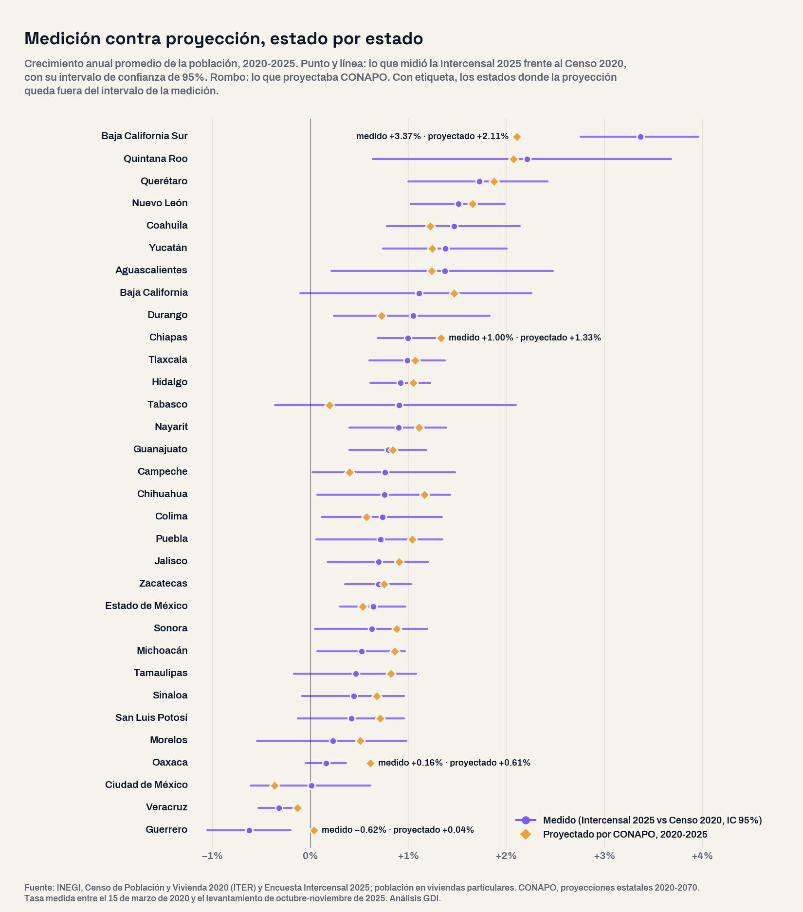

El 22 de septiembre el INEGI publicó la Encuesta Intercensal 2025, la primera medición de la población después del Censo 2020. La pregunta con la que arrancó este análisis fue abierta: ¿qué municipios ganaron y cuáles perdieron población entre 2020 y 2025, qué tienen en común y en cuántos el cambio ni siquiera se distingue del margen de error? Se compararon los 2,478 municipios del país con el censo, sin preseleccionar regiones, y cada resultado se contrastó con la proyección de CONAPO que usan muchos planes de desarrollo.
Dos precisiones de método. La Intercensal es una encuesta y mide a quienes viven en viviendas particulares: 130.4 millones de los 130.9 millones de residentes; el resto vive en viviendas colectivas. Por eso se compara con la misma población del censo, 125.5 millones en 2020, y un cambio se da por real solo cuando la cifra de 2020 queda fuera del intervalo de confianza de 95% de la encuesta. Los nueve municipios creados en el periodo se comparan junto con su municipio de origen.
4.9 millones más, repartidos de forma desigual
Entre marzo de 2020 y el levantamiento de octubre y noviembre de 2025, el país sumó 4,878,550 habitantes en viviendas particulares, 3.9% más: 0.7% anual, contra 1.0% entre 2015 y 2020, según el INEGI. Los hogares crecieron más rápido que la gente: las viviendas habitadas pasaron de 35.2 a 39.7 millones y el promedio de ocupantes bajó de 3.56 a 3.29.
El crecimiento se concentró. Las 92 metrópolis del país —421 municipios donde vivían 66 de cada 100 personas en 2020— sumaron 3.9 millones de habitantes: cuatro de cada cinco del aumento nacional. Los otros 2,045 municipios sumaron 954 mil. Y 57 municipios concentran la mitad de todo lo que ganaron los municipios que crecieron.
En 57% de los municipios no hay cambio que se pueda afirmar
El dato más útil para quien planea es el que menos se ve. De las 2,466 unidades comparables, 1,397 tienen un cambio que cabe en el margen de error: su población de 2020 está dentro del intervalo de 2025. En esos municipios no se puede afirmar que crecieron ni que perdieron habitantes, aunque la cifra puntual se mueva. Solo 371 ganaron población de forma estadísticamente significativa y 698 la perdieron.

Alerta: 698 municipios perdieron población
Los 698 municipios con una caída significativa suman 843,439 habitantes menos, y 681 no pertenecen a ninguna metrópoli. Son, sobre todo, municipios pequeños: la mitad tenía 3,108 habitantes o menos en 2020, y 567 fueron contados completos por la encuesta, así que su cifra no tiene margen de error. Oaxaca aporta 345, 61% de sus municipios; le siguen Veracruz (51), Puebla (45), Guerrero (41, la mitad de sus municipios) y Sonora (36).
El perfil se repite. Frente a los que ganaron población, el municipio típico que perdió habitantes es más viejo, con una edad mediana de 33.6 años contra 30.6; más pobre, con 76% de su población en pobreza en la medición municipal de CONEVAL 2020 contra 62%, y más dependiente del dinero que llega de fuera: en 10.3% de sus hogares alguien recibe ingresos del extranjero, el doble que en los municipios que crecen (5.2%). Su empleo formal registrado en el IMSS apenas se movió entre marzo de 2020 y marzo de 2025, +1.1%, mientras en los que ganaron población creció 24.0%.
Las ciudades centrales también pierden
La otra cara está dentro de las metrópolis. Guadalajara perdió 134,993 habitantes (−9.8%), la mayor caída del país, mientras Tlajomulco de Zúñiga, en la misma zona metropolitana, ganó 144,989 (+19.9%). Nezahualcóyotl perdió 76,419 (−7.1%) y San Nicolás de los Garza 29,890 (−7.3%). En el otro extremo, García, Nuevo León, encabeza los aumentos del país con 153,856 habitantes más (+38.7%), seguido de Tlajomulco y de Juárez, Nuevo León (+124,781). Las dos únicas metrópolis que perdieron población de forma significativa están en Veracruz: Poza Rica (−48,071) y Minatitlán (−24,200).
| Municipio | Población 2020 | Población 2025 | Cambio | Cambio % | Tasa anual medida | Tasa anual proyectada (CONAPO) |
|---|---|---|---|---|---|---|
| Guadalajara Jalisco | 1,379,731 | 1,244,738 | −134,993 | −9.8% | −1.82% | −0.26% |
| Nezahualcóyotl Estado de México | 1,071,824 | 995,405 | −76,419 | −7.1% | −1.31% | +0.26% |
| Poza Rica de Hidalgo Veracruz | 188,963 | 153,528 | −35,435 | −18.8% | −3.63% | −0.23% |
| San Nicolás de los Garza Nuevo León | 411,924 | 382,034 | −29,890 | −7.3% | −1.33% | +0.38% |
| Frontera Comalapa Chiapas | 80,857 | 66,016 | −14,841 | −18.4% | −3.55% | +2.04% |
| Cosoleacaque Veracruz | 130,874 | 116,215 | −14,659 | −11.2% | −2.09% | +0.08% |
| Técpan de Galeana Guerrero | 65,071 | 53,908 | −11,163 | −17.2% | −3.30% | +0.07% |
| Guadalupe y Calvo Chihuahua | 50,274 | 39,496 | −10,778 | −21.4% | −4.21% | −0.29% |
| Coyuca de Benítez Guerrero | 72,924 | 62,993 | −9,931 | −13.6% | −2.57% | −0.44% |
| Tihuatlán Veracruz | 92,715 | 83,303 | −9,412 | −10.2% | −1.89% | −0.43% |
La proyección no acertó en 42% de los municipios
La Intercensal permite revisar la proyección con la que se planeó el quinquenio. En 424 de los 698 municipios que perdieron población, la proyección municipal de CONAPO esperaba crecimiento. En 812 municipios la tasa proyectada queda por encima del intervalo de confianza de la medición y en 216, por debajo: en 42% de los municipios, lo proyectado no coincide con lo medido. En el agregado nacional la diferencia es menor, 0.77% anual proyectado contra 0.68% medido; el error está en la distribución territorial.
Por estado, la proyección quedó fuera del margen de la medición en cuatro entidades. Esperaba más crecimiento del que hubo en Guerrero (+0.04% anual proyectado contra −0.62% medido), Oaxaca (+0.61% contra +0.16%) y Chiapas (+1.33% contra +1.00%), y menos del que hubo en Baja California Sur (+2.11% contra +3.37%), que creció 20.4% en cinco años. Guerrero y Veracruz son los únicos estados que perdieron población de forma significativa: 121,266 y 144,422 habitantes. En julio publicamos el reacomodo municipal proyectado a 2040; esta es su primera prueba contra la medición.

Implicaciones para la gestión pública
1. Actualizar el diagnóstico con población medida. Cada indicador por habitante de un plan municipal —gasto, cobertura de agua, médicos o policías por habitante— cambia de denominador con la Intercensal. Un municipio que se planeó con la proyección puede estar sobreestimando su demanda. Nuestra guía del plan municipal de desarrollo parte de ese principio: cada diagnóstico con el dato de su propio territorio.
2. Leer el margen de error antes de anunciar crecimiento o pérdida. En 1,397 municipios el cambio no es significativo; un informe de gobierno no debería afirmar que el municipio creció o se despobló si la encuesta no lo sostiene. Cuando el coeficiente de variación municipal supera 15%, la cifra se cita como rango.
3. La población también reparte dinero. La Ley de Coordinación Fiscal, en su artículo 38, ordena que cada estado distribuya el FORTAMUN entre sus municipios en proporción a su número de habitantes, según la información estadística más reciente del INEGI. En 2026 los acuerdos estatales siguen usando el Censo 2020, como el de Tabasco, pero después de la Intercensal 2015 hubo estados que actualizaron el reparto con la encuesta, como Tlaxcala en 2018. Si Jalisco hiciera lo mismo, Guadalajara pasaría de 16.6% a 14.4% de la población estatal. Estimamos que su parte del fondo bajaría unos 180 millones de pesos al año con el monto de 2025, entre 100 y 260 millones por el margen de error de la encuesta, y la de Tlajomulco subiría unos 110 millones.
4. La periferia necesita infraestructura; los centros, repoblamiento. En García las viviendas habitadas crecieron 44.7% en cinco años y en El Marqués 63.4%: agua, drenaje, transporte y escuelas llegan después de las casas. En Guadalajara ocurre lo contrario, hay infraestructura instalada para una población que ya no vive ahí.
5. Un horizonte realista para los municipios que se vacían. Envejecimiento, dependencia de las remesas y empleo formal estancado piden servicios para adultos mayores y conectividad antes que expansión de obra. Es la misma presión que describimos en el país que envejece sin quien lo cuide.
Conclusión
La Intercensal 2025 no describe un país que se despuebla: México sumó 4.9 millones de habitantes. Describe un país que se concentra. Cuatro de cada cinco nuevos habitantes llegaron a las metrópolis, sobre todo a sus periferias; 698 municipios, casi todos pequeños y fuera de las ciudades, perdieron población, y en 424 de ellos la proyección esperaba lo contrario. Para un gobierno municipal, la pregunta útil es qué dice la medición, con su margen de error, sobre su propio territorio, porque de esa cifra dependen su diagnóstico, sus indicadores y una parte de su dinero.
¿Cuánta población tiene hoy tu municipio?
En la plataforma de GDI puedes consultar la población 2025 de tu municipio según la Encuesta Intercensal, junto con el Censo 2020, las proyecciones de CONAPO, el empleo formal, la medición de pobreza y las finanzas públicas, para actualizar el diagnóstico de tu plan de desarrollo con fuentes oficiales integradas.
Explorar mi territorioPreguntas frecuentes
¿Cuántos habitantes tiene México según la Encuesta Intercensal 2025?
El INEGI reporta 130.9 millones de residentes. De ellos, 130,393,389 viven en viviendas particulares, que es la población que la encuesta estudia a detalle: 4,878,550 más que en el Censo 2020, un crecimiento de 0.7% anual.
¿Cuántos municipios perdieron población entre 2020 y 2025?
698 municipios tienen una caída estadísticamente significativa, 371 un aumento significativo y en 1,397 el cambio no se distingue del margen de error de la encuesta. 681 de los 698 que perdieron población están fuera de las metrópolis.
¿Qué municipio perdió más habitantes y cuál ganó más?
Guadalajara perdió 134,993 habitantes (−9.8%), seguida de Nezahualcóyotl (−76,419) y Poza Rica (−35,435). El que más ganó fue García, Nuevo León (+153,856), seguido de Tlajomulco de Zúñiga (+144,989).
¿Coincidió la proyección de CONAPO con la Intercensal?
No en todos los municipios. En 42% de ellos la tasa de crecimiento proyectada queda fuera del intervalo de confianza de la medición, y en 424 municipios que perdieron población la proyección esperaba crecimiento. En el total nacional la diferencia es menor: 0.77% anual proyectado contra 0.68% medido.
Datos técnicos
Fuentes: INEGI, Encuesta Intercensal 2025 (resultados publicados el 22 de septiembre de 2026), con sus intervalos de confianza por municipio; INEGI, Censo de Población y Vivienda 2020, Principales resultados por localidad (ITER), ocupantes en viviendas particulares habitadas; CONAPO, proyecciones de población municipales 2020-2040 y estatales; SEDATU, CONAPO e INEGI, Metrópolis de México 2020 (tipología de municipios); CONEVAL, medición municipal de la pobreza 2020; IMSS, puestos de trabajo afiliados, marzo de 2020 y marzo de 2025. Todas consultadas en la capa de datos validada de Lokus, salvo el ITER, descargado del INEGI. Para el FORTAMUN: Ley de Coordinación Fiscal, artículo 38; Periódico Oficial de Tabasco del 21 de enero de 2026 y de Tlaxcala del 29 de enero de 2018; SHCP, transferencias del FORTAMUN a Jalisco en 2025 (8,295 millones de pesos corrientes).
Método: universo completo de 2,478 municipios, reunidos en 2,466 unidades comparables con 2020: San Felipe se suma a Ensenada; Dzitbalché a Calkiní; Ñuu Savi a Ayutla de los Libres; San Nicolás a Cuajinicuilapa; Santa Cruz del Rincón a Malinaltepec; Las Vigas a San Marcos; Villa de Pozos a San Luis Potosí; Eldorado a Culiacán; y Juan José Ríos, que tomó territorio de cuatro municipios, se compara junto con Guasave, Ahome, El Fuerte y Sinaloa. Se compara la población en viviendas particulares en ambos años. Cambio significativo: la población de 2020 queda fuera del intervalo de confianza de 95% de la estimación de 2025; en los 747 municipios que la encuesta contó completos, cualquier diferencia es real. Las tablas y listas de municipios solo incluyen cambios significativos con coeficiente de variación de hasta 15%. Tasa anual medida entre el 15 de marzo de 2020 y el punto medio del levantamiento, el 25 de octubre de 2025. La comparación con CONAPO es por tasas de crecimiento, no por niveles, porque su base de 2020 corrige la omisión censal. Metrópolis según la tipología oficial de 2020. Perfil de los municipios: medianas por grupo; empleo IMSS: suma de los municipios con registro en ambos meses.
Advertencias metodológicas: la Intercensal es una encuesta por muestreo; sus cifras municipales tienen margen de error. El IMSS registra el empleo formal privado según el domicilio del patrón, no el de residencia. La pobreza 2020 se usa como característica del municipio, no como causa del cambio. La estimación del FORTAMUN supone que el reparto estatal se actualiza con la Intercensal, con el monto de 2025 y la población en viviendas particulares de ambos años; los montos son pesos corrientes. La concentración del crecimiento en 57 municipios se calcula con las estimaciones puntuales.
Clasificación SCIAN: no aplica a la medición de población; el empleo formal del IMSS usa las divisiones de actividad del propio Instituto, no el SCIAN.
Nota: el análisis partió de una pregunta abierta y del universo completo de municipios ordenado por su cambio medido; los grupos y el patrón emergen de los datos, no de una clasificación previa.
Análisis: GDI — Gobierno Digital e Innovación · Fecha de análisis: 25 de septiembre de 2026 · gobiernodigitaleinnovacion.com